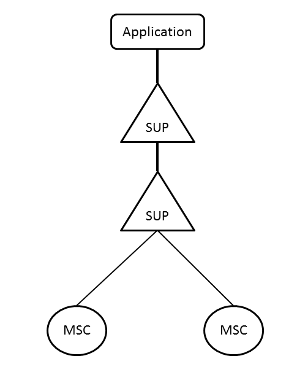

| Overview |  |
Copyright © 2012 Ericsson Egypt Ltd.
Authors: Esraa Adel (esraa.elmelegy@hotmail.com), Sherif Ashraf (sherif_ashraf89@hotmail.com), Ahmed Samy (ahm.sam@live.com) [web site: http://www.iti.gov.eg].
Application Name
Long description.
MSC application for MSC/VLR node (Mobile services Switching Center/Visitor Location Register) It is the node, which controls calls both to MS and from MS. The primary functions of an MSC include the following:
1- Switching and call routing: A MSC controls call set-up, supervision and release and may interact with other nodes to successfully establish a call. This includes routing of calls from MSs to other networks.
2- Communication with HLR: the primary occasion on which an MSC and HLR communicate is during the set-up of a call to an MS, when the HLR requests some routing information from the MSC.
3- Communication with the VLR: associated with each MSC is a VLR, with which it communicates for subscription information, especially during call set-up and release.
4- Communication with other MSCs : it may be necessary for two MSCs to communicate with each other during call set- up or handovers between cells belonging to different MSCs.
The application is mainly for the eductional usage... we hope it will help other trainees to understand the concept and the flow os every scenario happens in the GSM network
The configuration parameters are defined in the .config file. A sample configuration file is shown below:
[{appname, [{param, value}, {opt_param, opt_value}]}].

Generated by EDoc, Jun 27 2012, 22:47:19.